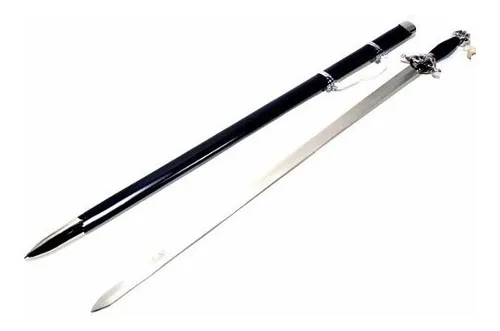
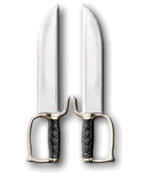

Armas Chinesas
Espada Tai chi

Espada tai chi é a tradução literal do têrmo chinês taijijian (chinês tradicional: 太極劍; chinês simplificado: 太极剑; pinyin: tàijíjiàn). O termo se refere tanto à um tipo de espada chinesa quanto à pratica de diversas sequências de treinamento com esta espada segundo os princípios do tai chi chuan. Em wushu e escolas tradicionais de artes marciais chinesas externas, o "método" ou "arte" da espada é também denominado jianfa (劍法, pinyin: jiàn fǎ).
Espada borboleta

A espada borboleta (chinês tradicional: 蝴蝶雙刀; chinês simplificado: 蝴蝶双刀; Pinyin: húdié shuāng dāo) é um dao, ou sabre-de-uma-ponta, originado do sul da China tem o nome em cantones; Wu Tip Do, no estilo wing chun kuen é conhecido como pa tzan do que significa oito cortes da lâmina, tem seu uso em vários estilos de kung fu como por exemplo Hung Kuen, Tong Long, Wing Chun, Choy Lee Fut, Loong Ying, Nan Sial Lin. Dependendo do estilo praticado as facas sofrem alteração em comprimento e tipo de gancho